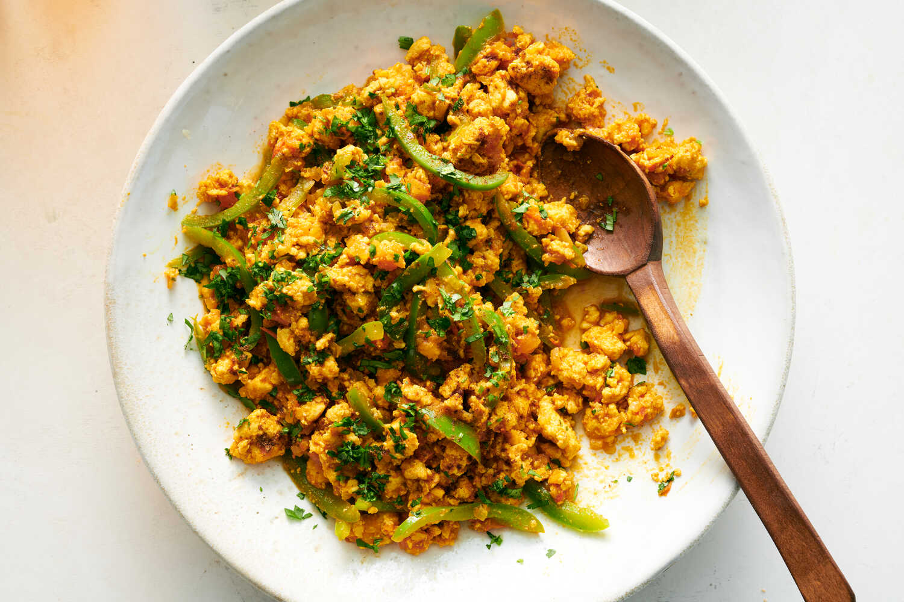

Keema

Description
Keema (also spelled kheema) is a popular dish in South Asian cuisine,
particularly in Indian, Pakistani, and Bangladeshi cooking. It refers to
ground or minced meat, typically lamb, beef, or chicken, which is cooked
with a variety of spices and sometimes vegetables. The term "keema" itself
simply means minced or ground meat, but the dish made from it can vary widely
depending on the region and the recipe.
Ingredients - serving size: 4
- 2 lbs ground chicken
- 2 small onions, sliced
- 1 tomato, sliced
- cilantro leaves and stems, finely chopped
- 1 tsp red chilli powder (consider adding equal portion Shan masala)
- 1 tsp coriander powder
- 1 tsp salt
- 1 tsp garam masala
- 1 green pepper, sliced
- 2 tsp garlic paste
- 1 tsp ginger paste
- sliced green chilli for garnish
Steps
- Fry onions until golden.
- Add red chili, coriander powder, salt, ginger, garlic, and tomatoes.
- Add chicken and the garam masala.
- Stir fry until chicken has browned.
- Add 1 cup of water and cover until water has mostly dried out and
oil begins to separate from the chicken.
- Add green peppers ~10 mins before done, so they soften in the steam as well.
- Garnish with green chillies, ginger, and cilantro.
Home